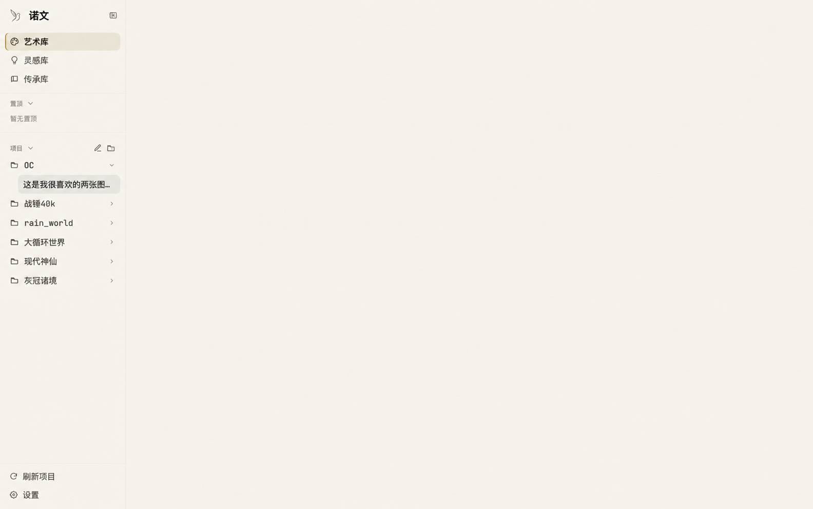
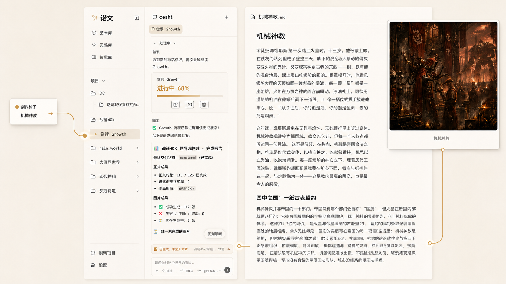
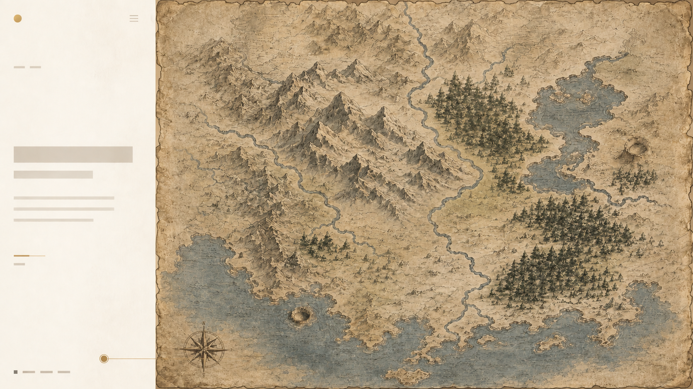
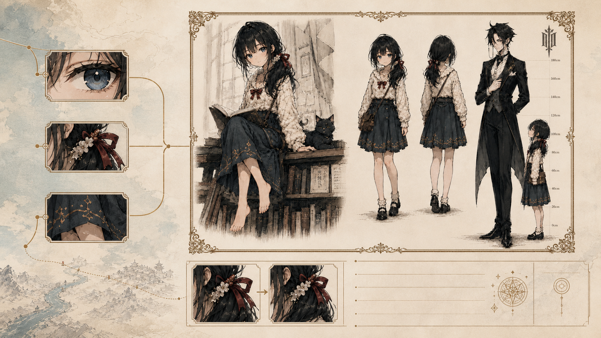
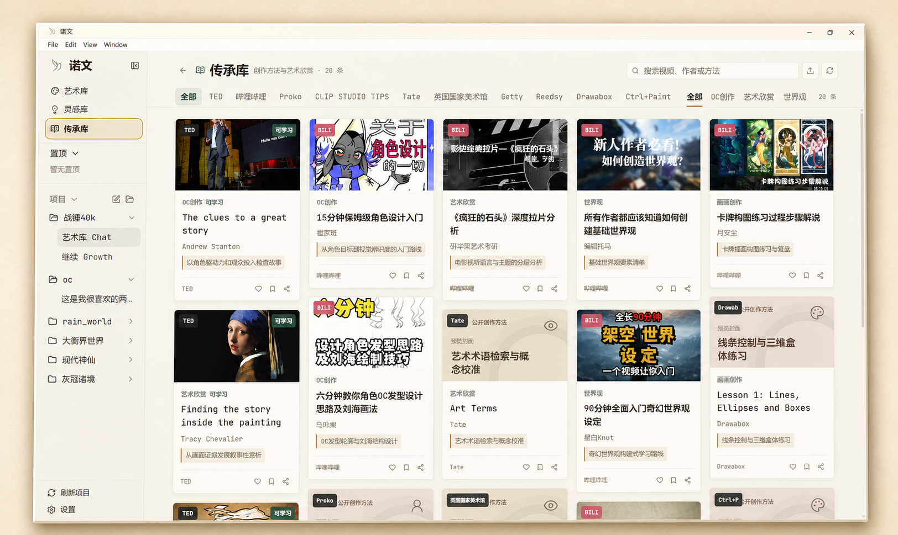
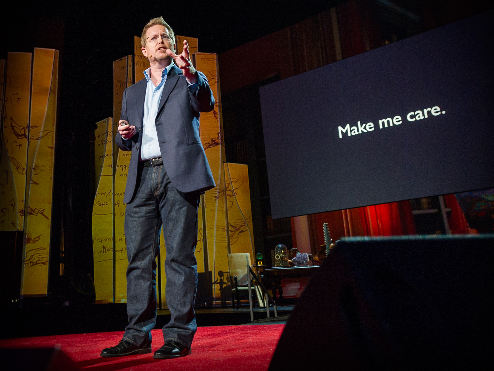
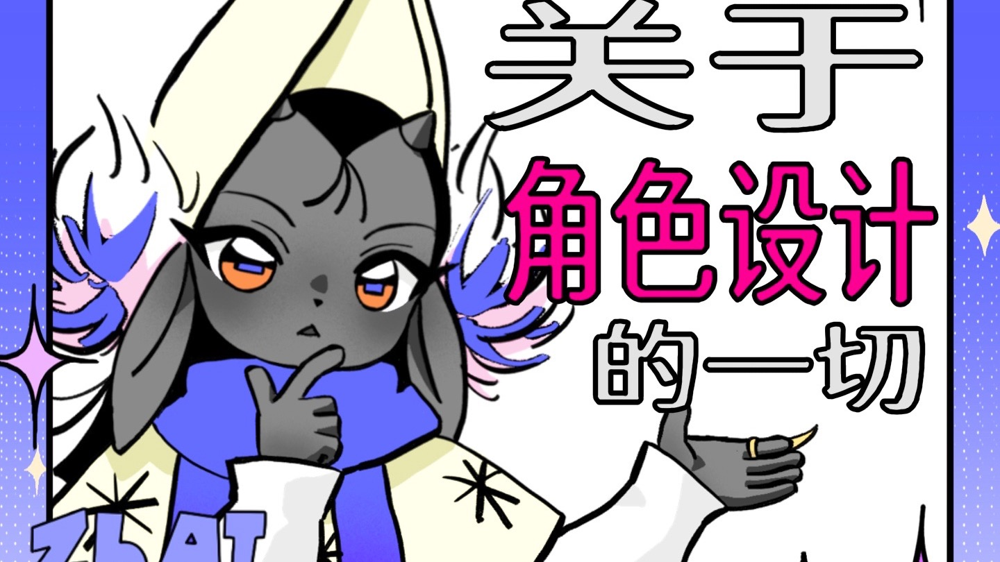
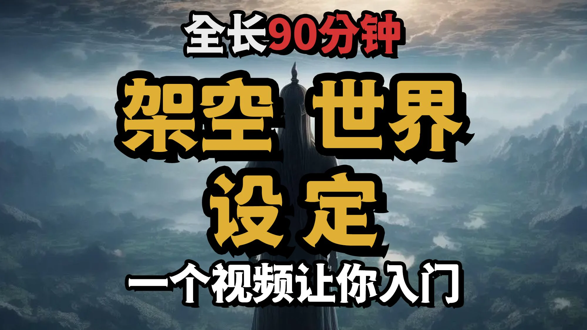

让一条好视频， 长成你的 OC。
从视频到世界观、角色、故事与图像
The poetics of sight
“美即是真，真即是美。这就是你在世间所知的一切，也是你需要知道的一切。”John Keats, Ode on a Grecian Urn
06 works/巨构艺术·叙事续写·原创世界
/Growth 我想为我的OC打造完整的世界....

构建世界
世界从此构建
地理、国家、组织与规则，在世界档案中彼此关联。


World atlas / Living geography
世界图志


完整大陆
每一处地理，都能成为故事的起点。
Agent Growth / Live process
创作正在生长。
继续 Growth
进行中
00%
Character archive07
OC展示
让角色从设定中走出来，成为可持续生长的创作坐标。
Idea library100 seeds
灵感库
问题打开可能，幻想让它成为世界。如果通过心灵感应让全球七十八亿人同时听到一句话，你会说什么？
遥远火山让整个北方失去夏天，粮仓、婚约和王位都在连续霜冻中崩溃。
身体的每个部分都被逐步替换，最后留下的仍然是原来的你吗？
一座从未存在的岛屿被各国承认数百年，直到测量船收到岛上政府的抗议信。
发光森林与人类共生，农业、婚姻和法律都按照花粉季与光周期运转。
改变过去一件微不足道的小事，最可能被重写的是哪段历史？
普通住宅的前门突然通向荒漠行星，房主必须面对移民潮、边境法律与围绕这扇门展开的国际争夺。
如果文明都因暴露位置而被消灭，人类还应该主动向星空发送信息吗？
自由城市上空爆发由球体、长矛和黑色三角组成的空战。
宇宙如此古老辽阔，为什么没有任何外星文明的明确痕迹？
炼金糖浆的巨塔破裂，黏稠浪潮吞没街巷并吸收死者最后一刻的记忆。
机器能让你终身体验完美幸福，但一切都是模拟的，你愿意永远接入吗？
NovelX / Method archive
诺文
创作方法与艺术欣赏
多元内容库，激发创作灵感系统化学习路径，沉浸式成长从灵感到作品，一站式创作支持


OC创作 · 可学习The clues to a great storyAndrew Stanton以角色驱动力和观众投入检查故事

OC创作15分钟保姆级角色设计入门翟家班从角色目标到视觉辨识度的入门路线

世界观90分钟全面入门奇幻世界观设定星白Knut奇幻世界观渐进式学习路线
The thirteen questions
诺文十三问
一切作品终究是人眼中社会的倒影。
01我们正处在一个怎样的创作时代？
这是一个创作能力不断向普通人下放，同时生活时间与注意力越来越碎片化的时代。
- 抖音完成了影像创作权的大规模下放：普通人第一次可以低成本生产、发布并获得观众。
- AI正在继续下放写作、绘画、设计、编程和多媒体制作能力，但“能够生成”还不等于“能够完成作品”。
- 诺文不把作品变成碎片，而是让创作过程可以碎片化：用户短暂参与，作者房间持续承担，让每一次参与都进入同一件完整作品。
02抖音怎样把普通人的表达变成持续运转的内容生态，诺文应该继承什么、警惕什么？
抖音真正建立的不是一个短视频工具，而是“创作 → 分发 → 回应 → 再创作”的循环。
- 诺文要继承这套循环：让一次心动迅速成为作品，让作品找到读者，再让评论、追问和分支重新推动创作。
- 诺文不能照搬短视频信息流：用户参与可以短，作品必须连续；社会回应可以影响创作，但流量不能直接决定文学。
- 抖音也证明了低门槛会带来模板化、低质复制和算法趋同。诺文不能以机器产量淹没人的表达。
03人类还有多少创造力可以被挖掘？
绰绰有余。
- 人类从来不缺故事、判断和想象，缺的是把它们变成作品并送到别人面前的条件。司机、护士、工人、商贩、教师、老人和孩子，都拥有现有内容体系难以替代的一手世界。
- 互联网和AI主要认识“已经能够写下自己的人”。诺文要让普通人的经验、判断与想象第一次以其自身作者身份进入公共叙事，并形成一幅由这个时代的人共同书写的人类画像。
- 这片经验也是潜在的AI资料蓝海，但普通人不是数据矿。作品保存、公开、推荐、商业使用、诺文内部训练和第三方模型训练必须分别授权，价值也应回到创作者。
04什么是创作负担，诺文究竟要替用户承担什么？
创作负担不是创作中的一切困难，而是那些阻碍用户把真正关心的东西变成作品，却不能给他带来创作快感和所有感的劳动。
- 诺文应接走点火、推进、表达、筛选、长期事实与版本维护，以及AI额外制造的反复解释、纠错和管理成本。
- 诺文必须留下用户真正关心的经验、人物、关系和关键选择。用户只写一句话，只要这句话不可替代地改变了作品，他仍然是创作者。
- 作者房间依靠三件事减负：权限边界决定可以做什么，经验与品味决定应该怎样做，作品状态保证这些取舍长期延续。
05为什么诺文选择作者房间，而不是把一套复杂创作工具交给用户？
因为最好的创作工具，不应该要求普通人先学会使用工具。
- 学习、选择、配置和组合人物卡、时间线、排版、模型路由等工具，本身就是新的创作负担。默认体验应该是：能丢给作者做的，就丢给作者做。
- 作者房间把创作、模型和工具复杂度内化。用户只需说“哪里不对”“帮我整理”“剩下你来”，对外始终由同一位作者对同一件作品负责。
- 内化不等于剥夺控制：用户需要时可以查看、接管或建立自己的工具，也可以让AI生成专用工具。叛逆作者则保证最终结果有判断，不是工具、模型和多数意见的平均回声。
06为什么先研究小说，却建设多媒体创作平台？
因为小说最适合建立作品的内核，多媒体最适合释放作品的形态。
- 小说能集中检验人物、关系、因果、社会理解和长期连续性；自然语言也是普通人进入复杂创作成本最低的入口。
- 文字先沉淀人物、世界、关系和剧情，成为可维护的语义母体；漫画、音频和视频不是机械转码，而是对同一作品的重新解释与再创作。
- 诺文的路线不是“只做小说”，而是：以小说建立作品，以多媒体释放作品。
07一句话怎样成为一件连续生长的作品？
用户可以只参与片刻，但作者必须让每一次参与都留在同一件作品里。
- 用户给出一句不完整的念头，作者先交付一个具体版本；用户再以“继续、不对、这里别动、剩下你来”等自然反应，完成确认、否决、保护和授权。
- 候选内容经过确认后写入正式作品；作者房间持续维护人物、事实、版本和未完成问题，使用户可以随时进入、离开和回来。
- 可以用 Time to First Fascination（首次着迷时间）观察用户多久产生第一次有效创作反应，但必须区分“参与创作”和“修理AI”。保留、否决、版本采用、回访和读者回应只有在分层授权下，才能成为个性化、评测或训练资料。
08如果所有人都使用少数模型，写出来的作品还是他们自己的吗？
早期一定会带有模型的声音；但随着人的参与加深，作品应该越来越拥有这个人。
- 不同人生解决“看见什么”，不能自动解决“怎样写”。少数模型、统一流程和流量分发都会造成真实的表达趋同。
- 诺文不做一百个风格滤镜，而采用少数能力有高低的通用作者：基础作者负责低成本、高频点火；高级作者负责关键理解、重大取舍和作品上限。
- 用户不断保留、否决、修改并补入经验，作品就会从AI对社会的普遍认识，逐渐深入个人对社会的具体反应。一切作品终究是人眼中社会的倒影。
09诺文怎样穿过电子泔水，迎来自己的“抖音时刻”？
低门槛首先带来数量爆发；真正的时刻，是创作者的量变最终引起文化表达的质变。
- 电子泔水是“生成发生了，创作没有发生”：机器批量生产，用户没有真实取舍，作品没有连续身份。诺文也不能制造“AI尸块”，把优秀作品拆成漂亮句子、桥段和风格特征，再缝成貌似完整的内容。
- 私人探索可以自由，公共发布必须承担最低责任；平台不奖励字数和篇数，而应帮助有连续性、有个人影响、能获得真实阅读的作品穿透无限供给。
- 诺文的“抖音时刻”或“AI短剧时刻”不是日生成量暴涨，而是过去不会出现的创作者、作品类型和沉默经验开始成规模地被看见。AI创作应从人类美学经验上继续生长，而不是肢解人类作品进行拼装。
10为什么一个更强模型，不能直接替代诺文和作者房间？
它完全可能替代其中大量机制；不能证明价值的复杂度，本来就应该被删除。
- 基础模型很可能快速覆盖越来越多通用创作能力。作者房间必须通过对比实验证明每一层机制能提高质量、减少纠正、保护个人经验或维持长期连续性，否则就应变薄或被删除。
- 自有模型不是首发前提。只有真实创作闭环暴露稳定缺口，并积累明确授权的创作过程资料后，才考虑微调、专用小模型或训练自己的作者模型。
- 诺文可能长期积累的不是提示词和多智能体数量，而是权威作品状态、创作历史、用户长期取舍、真实读者回应，以及来源、授权和分支网络。强模型可以成为更好的作者，但平台仍要让它对作品长期负责并让作品进入社会。
11诺文怎样建立可持续的商业模式？
免费让创作发生，为长期负责作品的作者服务收费；作品产生真实价值后，平台再参与分成。
- 免费点火：先让用户看见一个念头真的能够成为作品。
- Writing Plan（写作套餐）：为持续创作、长期作品状态和基础作者服务收费；高级作者、深度精修和高成本多媒体能力按量付费。用户购买的不是Token（文本单元）或模型名称，而是一位长期负责作品的作者。
- 有真实读者后，再从阅读、打赏和经授权的衍生创作中获得服务分成；Writing API（写作接口）、官方创作空间和自有模型属于后续路线。首发商业假设仍待真实付费、留存、成本和毛利验证。
12当人人都能继续别人的作品，诺文怎样建立开放而不失序的创作平台？
学习GitHub的开放协作机制，让作品可以被继续，但来源、权利和原作者价值不能被抹去。
- Creative Fork Protocol（创作分叉协议）拟建立作品仓库、授权协议、创作分支、差异记录、来源谱系、原作者关系和收益回流，把创作、传播、认可与商业化拆成清晰权限。
- 默认保护，开放必须由真实权利人主动选择。允许二创不等于原作者认可，市场喜欢不能代替授权，平台和任何群体都不能替未参与的权利人开放作品。
- 诺文负责创作前权限判断、创作中来源保留、发布门禁、收益回流、证据与申诉。协议可以联合作者、高校、二创、版权和法律群体共建，但正式落地仍需专业法律审查。
13为什么是现在？为什么是我们？
因为AI正在完成又一次创作权下放，而我们自己就是这场变化中的普通人。
- 为什么是现在：抖音释放了普通人的影像表达，AI正在继续释放写作和多媒体创作能力；与此同时，人的时间越来越碎片化，廉价生成越来越普遍，而真正有作者、有历史、有读者并保留具体人生的作品更加稀缺。
- 为什么是我们：不是因为我们已经证明必然胜出，而是因为项目本身就来自普通人借助AI进行创造的真实经历；我们已经在实验、失败和确认偏差中看见了普通生成工具没有解决的创作负担、统一作者、作品连续性、社会回应和权利问题，也愿意让强模型与真实证据删除无效复杂度。
- 最终承诺：抖音释放了亿万普通人的影像表达，诺文希望释放亿万普通人的故事表达。诺文要证明的不是AI能替人类生成多少内容，而是它能否把创作的权利真正交还给每一个拥有生活、判断与想象的人。过去沉默的人，终于可以成为描述这个时代的人。